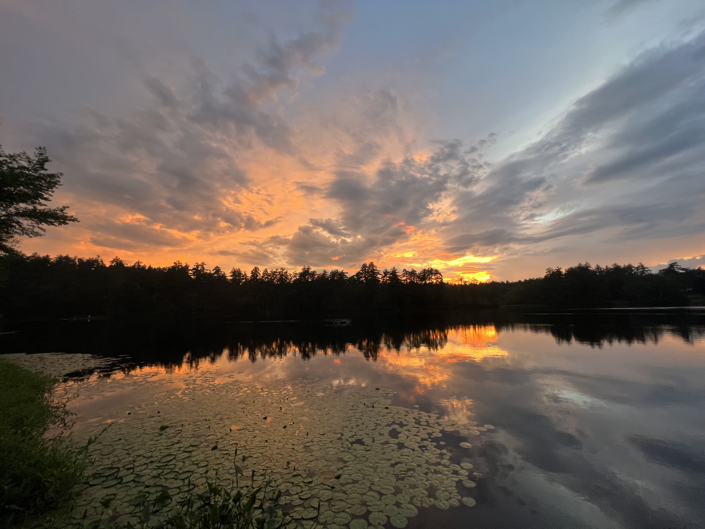

Summer in New England

Hiking
Description: Hiking in New England can be extremely popular as New England holds some of the most beautiful mountain ranges across the US. Hiking in the summer can be a very relaxing activity as it offers some of the best views on the east coast and allows you to connect with nature more. Hikes can range from difficult to easy based on where you decide to go.
Location: You can hike in any state in New England but the best states to hike are Maine, New Hampshire, and Vermont. Here are some notable mountains:
Mount Agamenticus in Maine,
Arethusa Falls in New Hampshire, and
Mount Mansfield in Vermont
Cost: According to https://www.nps.gov/neen/planyourvisit/fees.htm hiking in New England does not cost anything and does not require any entrance fee
Beach Days
Description: Along with its beautiful mountains New England also has beautiful beaches. With a majority of states in New England having a coastline there are a wide variety of options to spend a day at the beach. New England may have a cold reputation but the beaches in the summer are nice and warm and can offer a great vacation spot. At these beaches you can swim, play games, and visit the local towns surrounding these beaches.
Location: While Northern New England may have the best hiking there is no doubt that Southern New England has the best beaches. Some notable locations are:
Wellfleet Massachusetts in Cape Cod,
Provincetown Massachusetts in Cape Cod,
Old Saybrook Connecticut, and
Goosewing Beach Rhode Island
Cost: According to https://www.tripsavvy.com/10-best-beaches-in-new-england-7559055 prices may range from $0-$100 depending on the beach and the day.
Day in the city
Description: The summer is always a great time to explore a city and lucky for you New England has many cities to offer. While in these cities you can go to local sports games, explore the different shops, and visit historic areas. New England is one of the oldest areas of the US meaning it has lots of history and a lot of this history can be found in the cities.
Location: Every state of New England has historic cities with lots of things to do but these are the most notable cities to explore:
Boston Massachusetts,
Providence Rhode Island, and
Burlington Vermont
Cost: According to https://www.budgetyourtrip.com/united-states-of-america/boston the cost can depend on what you decide to do in the city and how long you plan on staying there. However, a typical trip to Boston for one week can cost about $1700. Visiting cities can be fun but keep in mind that it is the most expensive option.